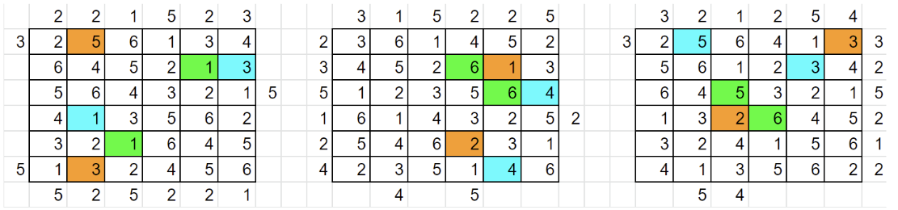

Solution: Altius
Answer: PEAKCCOLO
Written by Jonathan
With the help of the answers we already have and the skyscraper grids, we note that each skyscraper grid has 6 sets of 6 ?s, and there are 6 answers. This suggests we can associate each answer with 6 numbers from 1-6 somehow. Given the answers teams have, one thing to try would simply be to convert the letters to numbers A1Z26. We note that each string we already have has 6 digits in them, which fits the skyscrapers.
Now we can start associating answers to skyscrapers. The easiest break in comes from ABBEY, because of the direction of the given arrows and the 1 in ABBEY, it can only fit at the bottom of grid 1. VOW becomes the only word that can pair at the top of grid 1 with ABBEY. Of the remaining 4 words, CUBED is the only word that can belong to the top of Grid 3, and then it has only one match in BLEW. For grid 2, the 2 words are fixed because of the 4 given at the bottom of C2 (otherwise 6 has to be in R3C2 which contradicts the 5 in R3), so COVE belongs at the top and WELD on the left. We can then solve each of the 3 skyscrapers.

Extracting and ordering as given gives the meta answer PEAKCCOLO.
Author's Notes
In this meta, teams could backsolve the puzzles in the meta without having solved the meta. I had a list of 2 3-letter words, 13 4-letter words, and 15 5-letter words to choose from, and many were pretty close to each other. The constraints include the fact that the answers can only contain the letters ABCDEFKLMNOPUVWXYZ, with a 1 occuring exactly once (so exactly one of AKLMNOPU appears in the answer). Given 2 answers per grid, a lot of the words with many 5s and 6s could not fit either. It was a pretty fun and cool process constructing this meta!